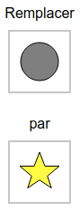
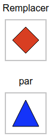
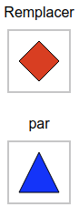
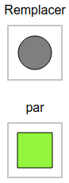
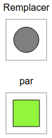
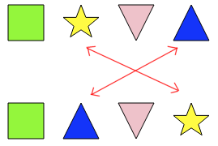
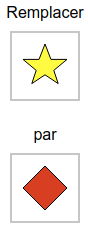
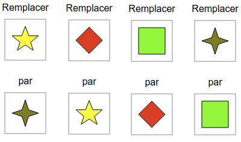
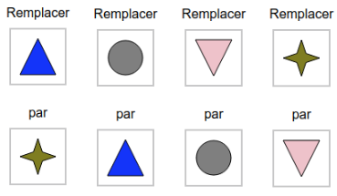

Replacements
Help the Beaver to make the shapes in the "Current Shapes Box" identical to the shapes in the "Target Shapes Box" by doing some replacements.
Everytime you need to make a replacement choose two shapes from the gray buttons to be replaced.
You can use the "Undo" button to get back a step.
Select two shapes from below:
Solution
Here are the replacements to perform :
 

These replacements transform the drawing step by step as follows :


Let's start by replacing the square with the inverted triangle, then the square with the :
 

These replacements transform the drawing step by step as follows :


At this point, it remains to replace the star with the triangle, and the triangle with the star, as shown below :
To exchange these two forms, it is necessary to involve a third form, for example a rhombus. We make 3 replacements :


These replacements transform the drawing step by step to the desired result :


Let's look at the substitutions to be made starting from the yellow star. The star must be replaced by a green square. The green square must be replaced by a red diamond. And you have to replace the red diamond with the yellow star.

To make these substitutions, it is necessary to involve an additional form, which does not appear in the initial drawing: the cross. The following replacements are made :
We then obtain the intermediate result shown below :

Now compare this drawing to the desired goal, which is :

To achieve this goal, replace the blue triangle with the inverted pink triangle, replace the inverted triangle with the circle, and replace the circle with the blue triangle.
Here again, it is necessary to use another form to make the replacements. You can use the cross, and make the following replacements :
